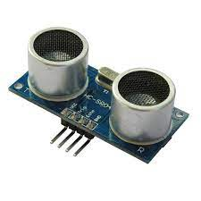
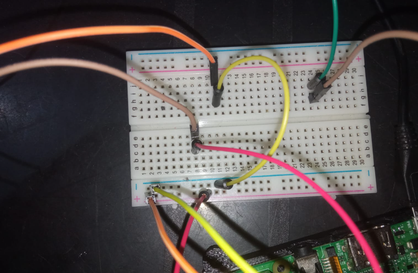

Aquí cambia toda la cosa, el sensor de proximidad funciona a base de emitir sonido y calcular que tanto tarda en rebotar para regresar a este, para así obtener una medida, en el siguiente código se usa para obtener los cm entre algún objeto y el sensor, por otra parte igual podría ser usado para activarse si detecta movimiento en ciertas medidas
import RPi.GPIO as GPIO
import time
GPIO.setmode(GPIO.BCM)
TRIG = 27
ECHO = 12
print("Medicion en progreso")
GPIO.setup(TRIG, GPIO.OUT)
GPIO.setup(ECHO, GPIO.IN)
GPIO.output(TRIG, False)
time.sleep(2)
GPIO.output(TRIG, True)
time.sleep(0.00001)
GPIO.output(TRIG, False)
while GPIO.input(ECHO) == 0:
pulse_start = time.time()
while GPIO.input(ECHO) == 1:
pulse_end = time.time()
pulse_duration = pulse_end - pulse_start
distance = pulse_duration * 17150
distance = round(distance, 2)
print("La distancia es", distance, "cm")
Realizado por Christopher Eduardo Barrientos Guerra